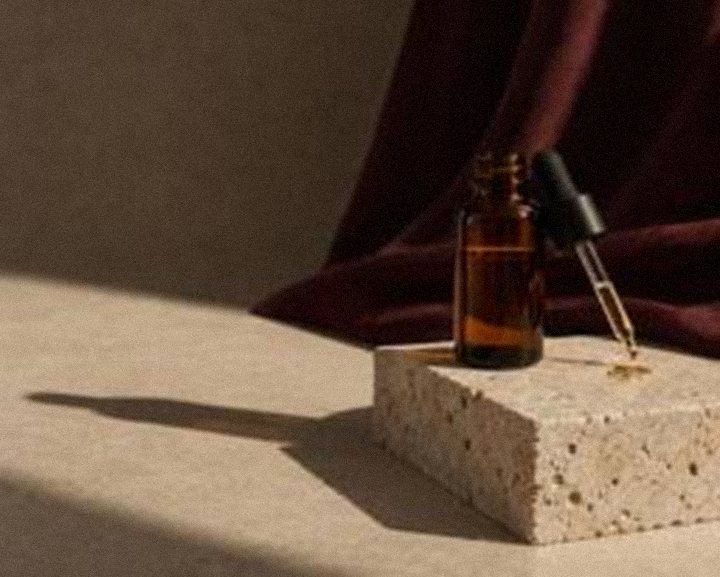
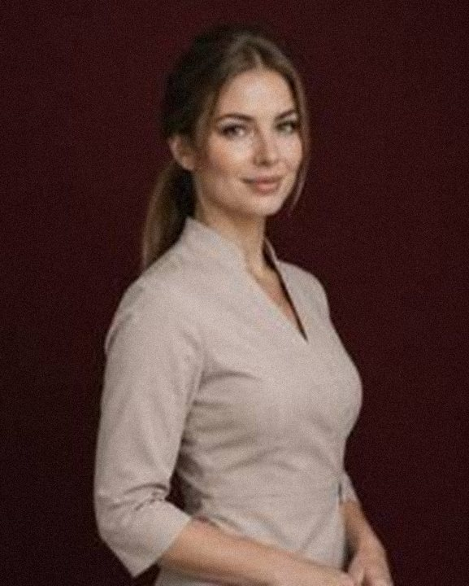
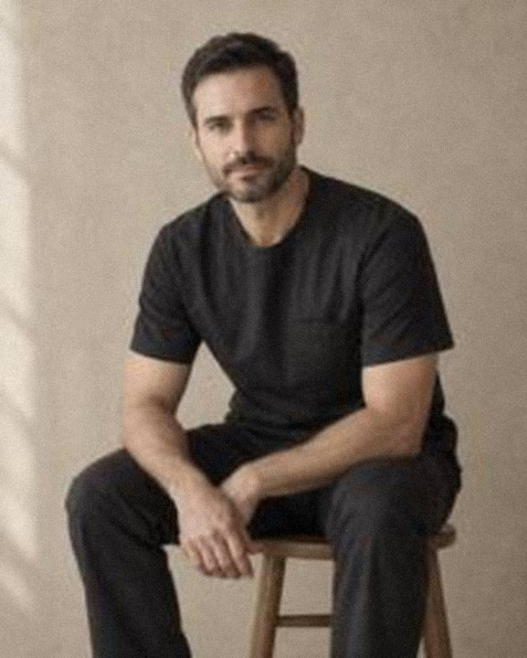

Medycyna estetyczna
Zabiegi wykonywane przez lekarza, które pracują z Twoimi proporcjami, a nie przeciw nim.

VÉRA to studio medycyny estetycznej i profesjonalnej pielęgnacji skóry w Warszawie. Zaczynamy od konsultacji i planujemy małymi krokami – tak, by efekt był wciąż w pełni Twój.
Piękno nie jest normą, do której trzeba dorosnąć. Już je masz – naszą pracą jest o nie dbać, podkreślać je i zostawić niezaprzeczalnie Twoim.
O studiuZabiegi wykonywane przez lekarza, które pracują z Twoimi proporcjami, a nie przeciw nim.

Peelingi i mikroigłowanie planowane jako seria, dopasowane do pory roku i rodzaju skóry.

Zabiegi na twarz, masaż i pielęgnacja dłoni w wykonaniu kosmetologów – bez pośpiechu i z precyzją.
Godzina na zrozumienie Twojej skóry, zanim zdecydujesz o jakimkolwiek zabiegu.

Każda wizyta przebiega w tych samych czterech krokach – niezależnie od tego, czy przychodzisz na zabieg na twarz, czy na zabieg medyczny.
Rozmowa bez pośpiechu i uważne spojrzenie na Twoją skórę. Niczego jeszcze nie rezerwujemy.
Możliwości, terminy i koszty na papierze – także to, czego byśmy nie polecali.
Wykonuje go specjalista, którego już znasz, w osobnym gabinecie i spokojnym tempie.
Wspólnie oceniamy efekt i dopasowujemy plan na kolejny sezon.
Trzy osoby, każda odpowiedzialna za inną część opieki. Od konsultacji po wizytę kontrolną spotykasz tego samego specjalistę.
O naszym zespole
Lekarz medycyny estetycznej
Prowadzi każdy zabieg medycyny estetycznej – od pierwszego wywiadu po wizytę kontrolną.

Kosmetolog
Projektuje nasze zabiegi na twarz i rytuały dłoni oraz plany pielęgnacji domowej.

Specjalista ds. skóry
Prowadzi konsultacje skóry i planuje serie peelingów oraz mikroigłowania.
Tekstury, rytuały i wnętrza studia. Wybierz zdjęcie, aby je powiększyć; strzałkami przechodzisz między zdjęciami.
W studiu,
Godzina, lustro i sporo pytań. Podpowiadamy, jak wygląda wizyta i co warto ze sobą zabrać.
Pielęgnacja,
Krótsze dni nie wyłączają promieniowania UV. Dlaczego przed każdym peelingiem pytamy o SPF – nawet w styczniu.
Pielęgnacja,
Dwa słowa używane zamiennie – i dwie różne rzeczy, których może potrzebować Twoja skóra.
Parter, wejście od dziedzińca